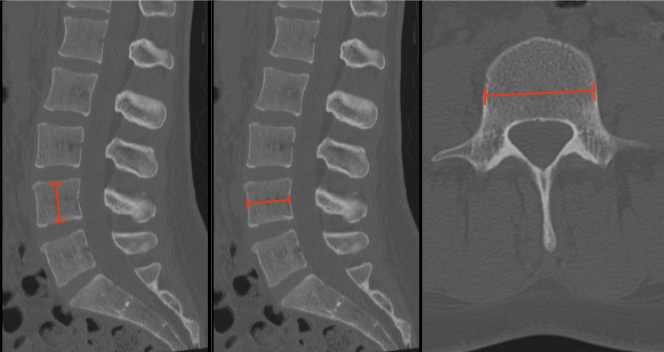

Adapted from: Feger J, Campos A, Murphy A, et al. CT lumbar spine (protocol). Reference article, Radiopaedia.org (Accessed on 03 Jan 2026) https://doi.org/10.53347/rID-90041
1) Description of Measurement
Vertebral body dimensions quantify the size and morphology of each lumbar vertebral body. These measurements are essential for:
Dimensions include:
2) Instructions to Measure
Step 1 – Select Proper Slice
Step 2 – Vertebral Body Height (Sagittal CT)
Step 3 – AP Depth (Axial or Sagittal CT)
Step 4 – Transverse Width (Axial CT)
Step 5 – Documentation
3) Normal vs. Pathologic Ranges
4) Important References
Ferrar L, Jiang G, Adams J, Eastell R. Identification of vertebral fractures: an update. Osteoporos Int. 2005 Jul;16(7):717-28. doi: 10.1007/s00198-005-1880-x. Epub 2005 May 3.
Vaccaro AR, Oner C, Kepler CK, et al; AOSpine Spinal Cord Injury & Trauma Knowledge Forum. AOSpine thoracolumbar spine injury classification system: fracture description, neurological status, and key modifiers. Spine (Phila Pa 1976). 2013 Nov 1;38(23):2028-37. doi: 10.1097/BRS.0b013e3182a8a381.
Schnake KJ, Schroeder GD, Vaccaro AR, Oner C. AOSpine Classification Systems (Subaxial, Thoracolumbar). J Orthop Trauma. 2017 Sep;31 Suppl 4:S14-S23. doi: 10.1097/BOT.0000000000000947.
5) Other info....
Always measure at the true mid-vertebral level to avoid overestimating due to endplate irregularities.
In trauma, compare anterior vs posterior height to detect subtle burst or wedge fractures.
Vertebral body dimensions are critical for selecting appropriate interbody cage height and footprint.
Progressive decrease in height across serial imaging suggests ongoing collapse or instability.